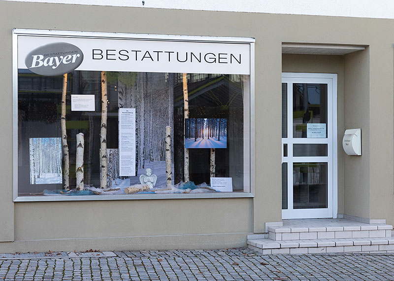

Bestattungsinstitut Bayer. Memmingen und Ottobeuren.
Mit dem Hauptgeschäft in Memmingen nahm die Geschichte unseres Familienunternehmens ihren Anfang · auf einem Weg, der ungewöhnlicher kaum sein könnte: Er begann mit einem Blumenladen.
Wo alle Fäden zusammenlaufen.
Gegründet als Gärtnerei im Rennweg, war „der Blumen Wiskott" später am Waldfriedhof zu finden · geführt von Sabine Ettmüller in dritter Generation. Durch diese Lage machte unsere Familie Bekanntschaft mit Familie Bayer und damit mit dem Bestattungswesen. Es folgten Grabarbeiten und Grabpflege, und eines Tages der Einstieg von Christian Ettmüller bei Bayer Bestattungen. Was als Aushilfe am Wochenende begann, führte mit viel Einsatz und Hingabe zur Position des Geschäftsführers.
2007 war das entscheidende Jahr: Bayer Bestattungen ging in den Besitz unserer Familie über. 2008 stieg Johannes Ettmüller mit ein, ein Jahr später Katharina. Es folgten die fachspezifischen Ausbildungen zum geprüften Bestatter beziehungsweise zur Bestattungsfachkraft und Bestattermeisterin · Ende Juni 2019 schloss Johannes Ettmüller zusätzlich seine Ausbildung zum geprüften Thanatopraktiker ab.
Vieles haben wir seither verändert, denn das Leben ist Veränderung. Doch es gibt auch Konstanten, die Sicherheit schenken: Seit über 40 Jahren befindet sich der Hauptsitz der Allgäu Bestatter in der Hohenstaufenstraße 14. Was früher ein Gemischtwarenladen war, ist heute der Dreh und Angelpunkt unseres Familienunternehmens. Von hier aus wird alles gesteuert.
Hohenstaufenstraße 14 · 87700 Memmingen
Telefon 08331 61078 · Fax 08331 69403
E-Mail bayer@allgaeu-bestatter.de
Zentral gelegen. Persönlich geführt.
Neben dem Hauptsitz in Memmingen gehört auch die Filiale in Ottobeuren zu den Allgäu Bestattern. Konnten wir Sie früher nur in einem kleinen Raum beraten, stehen uns seit dem Umzug im Jahr 2013 ansprechende Räumlichkeiten in zentraler Lage und angemessenem Ambiente zur Verfügung.
Selbstverständlich bieten wir Ihnen auch in Ottobeuren umfassende Hilfestellung und individuelle Beratung im Todesfall an · von der Planung der Trauerfeier bis zur Übernahme aller notwendigen Formalitäten. Auf Wunsch übernehmen wir in ländlichen Gebieten auch die Grabarbeiten. Und wer sich unverbindlich beraten lassen möchte, beispielsweise zum Thema Vorsorge, ist hier ebenso herzlich willkommen.
Da unser Ottobeurer Standort nicht ständig besetzt ist, bitten wir Sie, uns telefonisch zu verständigen. Wir sind Tag und Nacht erreichbar und in der Regel innerhalb von 30 Minuten vor Ort.
Eine Besonderheit: Alle drei Monate wird die Dekoration in den Schaufenstern unseres Ottobeurer Standortes erneuert und so gewissermaßen mit Leben gefüllt. Themen wie Italien, Romy Schneider, Ägypten oder die verschiedenen Religionen werden visuell aufbereitet und mit Infotexten ergänzt.
Ludwigstraße 46 · 87724 Ottobeuren
Telefon 08332 93333
E-Mail bayer@allgaeu-bestatter.de


Rufen Sie an. Zu jeder Stunde.
In Memmingen, Ottobeuren und der gesamten Region · Tag und Nacht, auch an Sonn- und Feiertagen.
08331 61078